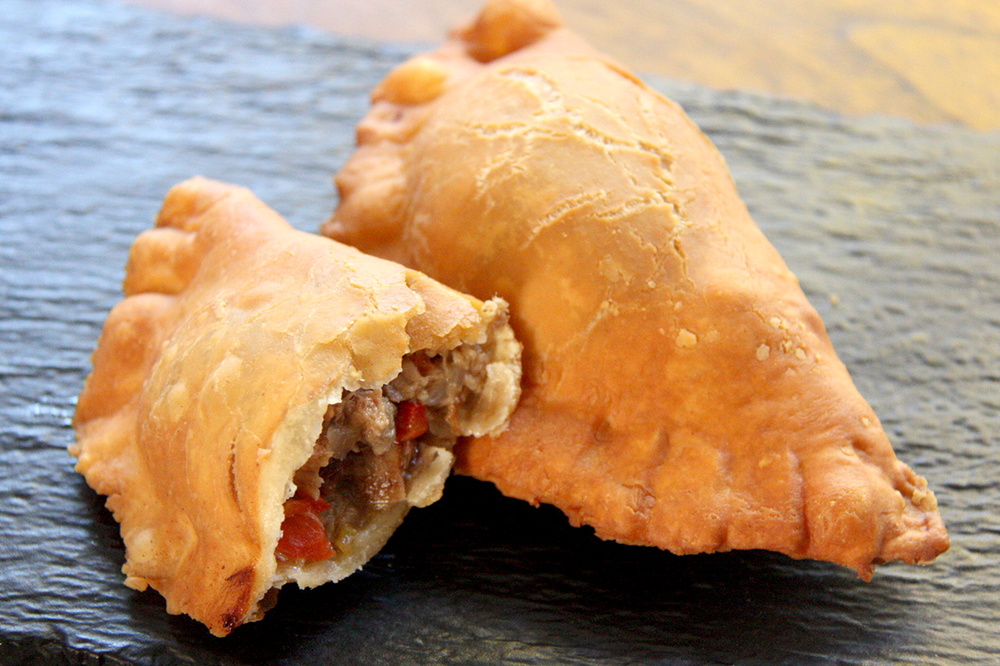

| Year | Total Number of Inbound Tourists |
|---|---|
| 2010 | 334,645 |
| 2011 | 379,284 |
| 2012 | 405,764 |
| 2013 | 422,151 |
| 2014 | 427,104 |
| 2015 | 408,442 |
| 2016 | 441,356 |
| 2017 | 398,836 |
| 2018 | 431,692 |
Tourism is one of the biggest industries in Curacao. At least 20% of the economy is contributed to by tourism. In the above table, you can see the amount of inbound toursists to the island. Due to the COVID-19 pandemic, tourism has fallen off and the economy has taken a large hit on the island. Regardless, this page showcases some data on the tourism on the island.

The round fried balls here are called bitterballen. These are deep-fried balls of gooey beef and gravy and it’s typically served with mustard for dipping.

This is karni stoba, or beef stew in English. The beef stew, which can also be made with goat, is a dish of cubed, marinated meat simmered with different combinations of onions, garlic, cumin, curry, nutmeg, bell peppers and tomatoes.
This is a pastechi, a savory, crescent-shaped, fried or baked pastry which is similar to an empanada, though the dough is usually lighter.